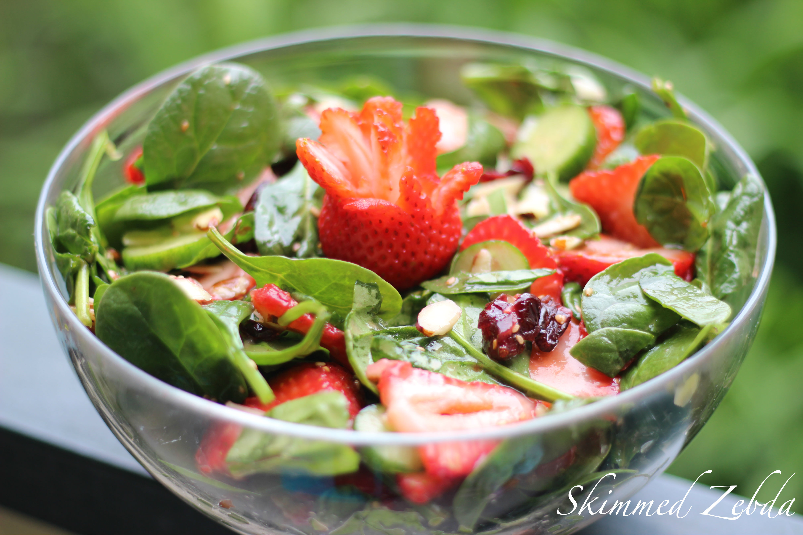

Spinach & Strawberry Salad
October 15 2021
Servings: 6 People
Total Time: 20 min

Ingredients List:
- 1/2 lb Spinach
- 1lb Strawberries
- 1 teaspoon dried parsley leaves
- 1/2 teaspoon ground oregano
- Salt and freshly ground black pepper
- 1 tablespoon olive oil
Directions:
-
Wash & cut Spinach, Strawberries & Cucumbers.
-
Combine the herbs in a shallow bowl with salt and pepper and oil.
-
Mix the Veggies with the seasoning.
-
serve with toast.